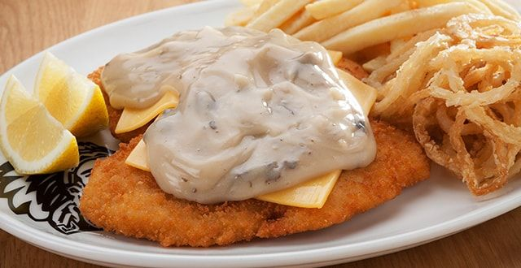

Chicken Schnitzel

Cheddamelt Schnitzel
In this picture we have a traditional chicken schnitzel with the addition of some melted cheese and is usually made with a choice of either creamy pepper
or mushroom sauce.
This meal is taken from another local favourite franchise called Spur Steak Ranch here in South Africa, and is a great staple meal for any dinner
featuring white meat and usually chips or salad on the side.
Ingredients:
- Chicken Breasts
- Flour
- Dijon Mustard
- Parsley
- Pepper
- Eggs
- Breadcrumbs
- Salt
- Cheddar
- Mushroom/Pepper Sauce
- Remove chicken tenders from breasts and save them for later use. Working with one piece of chicken breast at a time, place it in a ziploc plastic bag
or between two sheets of plastic wrap. If using a plastic bag, partially close the bag, but not all the way to allow air to flow out.
Use a meat mallet to pound out the meat using the flat side of the mallet, gently so you don’t tear the meat, until it’s about ¼-inch in thickness.
Repeat with the rest of chicken breasts. Season the chicken breasts with salt and pepper. Set aside.
- In one shallow plate whisk the flour with 1 tsp salt and pepper. In another shallow plate whisk the breadcrumbs with 1 tsp salt and pepper and
in another plate, whisk the eggs with 1 tsp salt, pepper and the Dijon mustard.
- Place a rack on a baking sheet. Place all plates next to each other like on an assembly line. Start by coating the chicken in the flour mixture first, shaking off any excess.
Dip it into the egg mixture next, making sure it’s fully covered in egg, and lastly dredge it through the breadcrumb mixture.
Place on the prepared baking sheet and repeat with the rest of the chicken.
- Heat about ½-inch of vegetable oil in a skillet over medium-high heat. Once the oil is hot enough (350F) place a schnitzel into the skillet and fry, the oil should sizzle.
Usually I drop a breadcrumb to see if it sizzles. If your skillet is really big you may be able to fry two pieces of chicken at a time, otherwise don’t rush this process.
I used a 10½-inch skillet, and was only able to fry one schnitzel at a time. Add more oil as necessary in between schnitzels.
Fry for about 2 to 3 minutes per side or until the schnitzel is a deep golden brown.
Transfer to a plate lined with paper towels or another baking sheet with a rack on top. Repeat with remaining chicken.
- Serve!
Back to Home Page